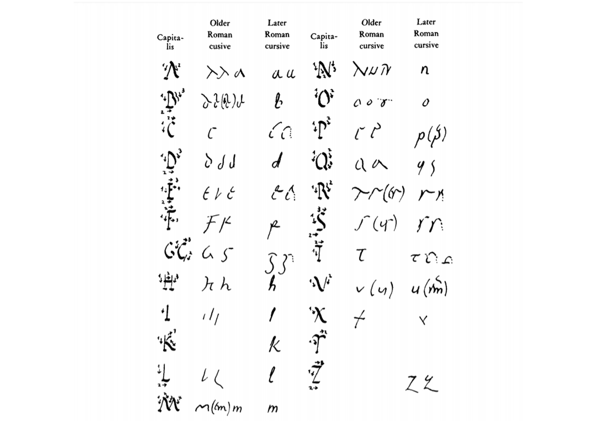
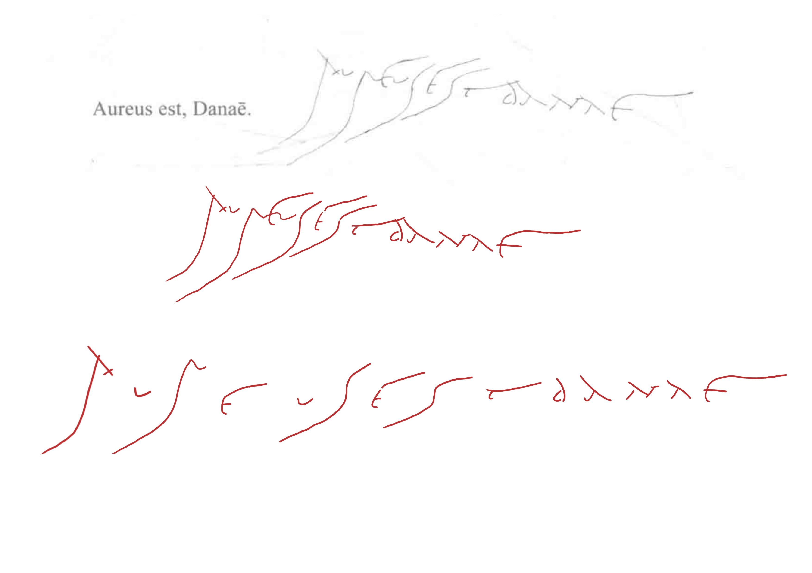

我其实一直在考虑要不要写这一篇关于 Old Roman Cursive 与 Later Roman Cursive 的识读的实践笔记，因为这两个字体实在是过于扭曲，其中 Old Roman Cursive 尤其扭曲。思考再三还是决定写，毕竟古罗马人可不会考虑今天的古文字研究者读不读得懂他们写的字。
我的计划是，用庞贝古城墙上的书写来作为熟悉和引入 Old Roman Cursive 的例子，因为那个相对简单一些，然后再配上一个手稿的例子作为实战。Later Roman Cursive 相对简单，可以直接进入实战。
Old Roman Cursive
首先我们来看下 Old Roman Cursive 的字型，这里我就直接连同 Later Roman Cursive 一起展示了：

可以说是乱七八糟。那么先看下面这个案例：

这是来自《韦洛克拉丁语教程》的“墙上的书写”栏目的一个例子。庞贝古城于公元 79 年被埋葬，应该说它是展示 Old Roman Cursive 的绝佳例子，尽管这还是学童的书写。
图中，最上方是书本截图，由于不太清晰，下方我又描写了一遍，然后将字符一个个拆分出来。
A 和 R 很像，它们的区别主要在于，A 允许左斜线段末端上卷，而 R 则允许右斜线段末端上卷。与之相对，A 的右斜线段和 R 的左斜线段末端往往向下。E 似乎是这些文本中最容易辨认的，一个弓形的弧线被中间的横线贯穿，至少在这个例子中，最后一个 E 是确认无疑的。倒数第四个字符左侧斜线末端上卷，这是 A 的特征，而倒数第二个字符右侧斜线末端整体上凸，这也是 A 的特征，那么移除这两个字符后，中间字符 N 的特点就很明显了。B 和 D 也是如此，B 的斜线末端上扬，一般不一笔写就，而 D 则类似于 δ 的写法，一般都一笔写成，即使不是一笔写成，也不会突出第二笔的独立性。案例中的字符是两笔写成的，但是第二笔基本接着第一笔继续写了，也没有上扬，所以判断这是 D。
开头的两个字符无法判断是 AV 还是 AN，主要问题出在 A 右侧斜线上多出的一笔，无法判断属于 A 还是属于它后面的那个字符。但是考虑到书写者一般会用类似的习惯书写，那么依据倒数第三个字符 N，此处的字符和已经读解出来的 N 不符合，因此这里更有可能是 AV。后面一个字符，如前所说，右侧斜线上扬，说明这是 R，然后是一个很典型的 E 和一个余下的 V。接下来的四个字符比较简单，首先是一个 S 和一个比较典型的 E，然后是一个 S 和一个 T。Old Roman Cursive 中 S 会写成这种拉长的样子，T 写起来如同希腊文的 τ。对拉丁语敏感就会意识到，这里有一个 est，拉丁语的常用单词。
如此一来，我们就有了这些铭文的转录：aureus est danae。之前的转录中有几处举棋不定的地方，拿着所有可能的结果去查阅拉丁语词典，如果无法查到那个单词，说明大概率转录错了。当然，古罗马人也会写错单词，但如果那个单词完全不符合拉丁语的构词习惯，那么基本可以确认是转录错字母了。学者认为这句话来自《变形记》中的 aureus ut Danaen（Met 6:113），也就是达那厄因朱庇特化作的金雨而受孕的故事。单词拼写正确，句法也不错，句意也通，这表明转录基本是正确的了。